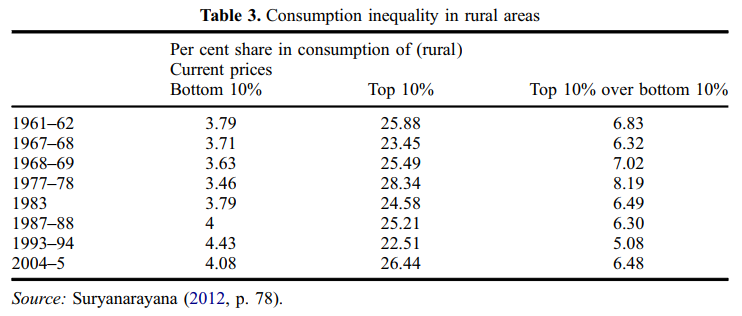
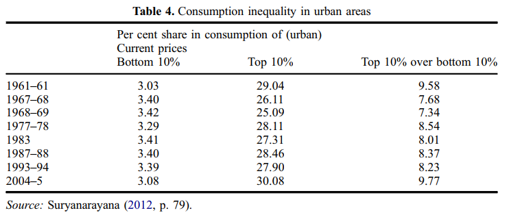

Indian Economy I
Growth and Distribution Regimes in India
Reference
Vamsi Vakulabharanam & Rahul De (2016) Growth and Distribution Regimes in India after Independence, The Round Table, 105:6, 621-640, DOI: 10.1080/00358533.2016.1246860
Introduction
- Two narratives of post colonial economic development
- Macro indicators
- Succession of regimes
- Both the narratives are important.
The four regimes of accumulation in Independent India (1947-2011)
India on the Eve of Independence
- Destroyed traditional industries
- Deindustrialised the country.
- Left the country with challenges:
- Self sufficiency in agriculture
- Heterogeneous groups and their vested interests
- Technological dependence on the metropolitan economies.
Regime #1 | Pre-eminence of Planning and State Capitalism (1950-67)
Pre-eminence of Planning and State Capitalism (1950-67)
- Economy under Nehru
- State directed
- Emphasis on heavy industries
- Growth of industry - 5.8%
- Government consumption (G) - 6%
- State as the main driver of growth.
- Investment in industry - 7%
- Dual role of public investment.
- Resources allocated to long-term industrial investments.
Pre-eminence of Planning and State Capitalism (1950-67)
- Import Substitution Regime
- To protect infant domestic industries.
- To increase exports.
- Exports growth = 1%
- Imports were still higher
- India’s dependence for food, energy, and machinery.
- Imports grew by 40%.
- Current Account Deficit peaked to 3% by 1965.
- More foreign aid needed to finance CAD.
Pre-eminence of Planning and State Capitalism (1950-67) : Class Dynamics & Distributional Effects
- Benefits to domestic capital
- Limited expansion of public sector
- Domestic capital protected from external competition.
- Benefits to urban skilled workers
- Unsuccessful land to tiller policy
- Land redistribution blocked by large landlords
- Limited redistribution
- Low growth in agriculture
Pre-eminence of Planning and State Capitalism (1950-67) : Class Dynamics & Distributional Effects
- Greater urban-rural inequality
- Absence of welfare policy
- State \(\rightarrow\) GDP growth; Economic Planning \(\rightarrow\) Distribution
Pre-eminence of Planning and State Capitalism (1950-67) : Class Dynamics & Distributional Effects
- Urban & rural consumption inequality declined

Crisis towards the mid 1960s
- Imbalances in agriculture sector.
- Inadequate public investment
- Failure of land reforms
- Growth of agri sector: 1.7%
- Structural imbalances led to BoP crisis in 1965 and 1966
Crisis towards the mid 1960s
- BoP crisis
- Lack of monsoon
- Fall in agri output (10%)
- Fall in private consumption
- Import of food grains increased in 1966
- Imports \(\uparrow\) 11% in 1965 \(\rightarrow\) 28% in 1966
- Led to BoP crisis
- Pressures to devalue
- Bring down the import substitution regime.
Data Source: World Bank
Ref for events: Inflation In India: Status and Issues by Y.V. Reddy
Regime #2 | Green revolution and populism (1967-80)
Green revolution and populism (1967-80)
- Agricultural crisis \(\rightarrow\) Change in policy (land reform)
- The New Agricultural Strategy (1965)
- Improve productivity
- Technological modernisation
- Investments
- Crop wise and region wise
- Improve productivity
- Shift from public to private sector investments
Green revolution and populism (1967-80)
- State’s role
- Increased agri credit & fertilizer subsidies
- Increased mechanisation
- Support minimum prices
Green revolution and populism (1967-80)
- Role of the state in industrial development declined.
- Industrial slackening \(\rightarrow\) GDP \(\downarrow\) 4.5%
- Exports \(\uparrow\) 7.5%
- Increase in government regulation of private and foreign enterprises
- FERA, 1973
- MRTP, 1969
- Nationalisation of banks
- External policy
- Improve current account
- Decrease dependence on external powers.
- 1973: Positive CAD in India for the first time.
FERA: Foreign Exchange Regulation Act, 1973
FERA was a crucial piece of legislation enacted by the Indian government to regulate foreign exchange transactions and control the outflow of foreign currency from the country.
Its implementation aimed to stabilize the Indian economy, which was facing challenges in managing foreign exchange reserves and preventing capital flight.
FERA played a significant role in India’s economic policies until it was eventually replaced by FEMA in 1998.
Historical Context
Pre-FERA Economic Challenges
- Before the enactment of FERA, India struggled with balance of payments issues and a shortage of foreign exchange reserves.
- There was an urgent need to curb the illegal transfer of foreign currency and control capital flight, which was affecting the stability of the Indian rupee.
Example: Balance of Payments Crisis
- In the late 1960s, India faced a severe balance of payments crisis due to rising import bills and a decline in exports.
- The crisis led to a substantial depletion of foreign exchange reserves, prompting the need for stricter foreign exchange regulations.
Objectives of FERA
Controlling Foreign Exchange Transactions
- FERA aimed to control and regulate foreign exchange transactions to ensure stability in the foreign exchange market.
- It authorized the government to impose restrictions on the movement of foreign currency in and out of India.
Conserving Foreign Exchange
- The conservation of foreign exchange was a critical objective of FERA. The act sought to conserve India’s limited foreign exchange reserves for essential imports and development projects.
Key Provisions of FERA
Regulation of Foreign Exchange Transactions
- FERA empowered the Reserve Bank of India (RBI) to regulate all foreign exchange transactions, including the conversion of Indian currency into foreign currency and vice versa.
- Any person or entity engaging in such transactions had to comply with RBI’s regulations.
Control over Foreign Securities
- The act prohibited Indian residents from holding foreign securities without RBI’s permission.
- It aimed to prevent the outflow of capital through investments in foreign financial instruments.
Restrictions on Dealings in Foreign Exchange
- FERA imposed restrictions on the possession and utilization of foreign currency within India.
- Non-compliance with these regulations could lead to penalties or legal actions.
Amendments to FERA
1976 Amendment
- The 1976 amendment to FERA strengthened the penalties for violations and introduced stricter enforcement measures.
- This amendment addressed the need for more effective deterrents against illegal foreign exchange activities.
1993 Amendment
- The 1993 amendment allowed for compounding of certain offenses, enabling offenders to settle their cases by paying a compounding fee.
- This move aimed to reduce the burden on courts and expedite the resolution of cases.
Repeal of FERA
Reasons for Repeal
- FERA faced criticism for being a draconian law, leading to the misuse of its provisions by authorities.
- The government recognized the need for more liberalized foreign exchange regulations to attract foreign investments and promote economic growth.
Introduction of FEMA
- In 1998, FERA was repealed, and the Foreign Exchange Management Act (FEMA) was introduced to replace it.
- FEMA marked a significant shift towards a more modern and market-oriented approach to foreign exchange regulations.
Foreign Exchange Management Act (FEMA)
Objectives and Scope
- FEMA aimed to facilitate external trade, promote foreign investments, and maintain orderly foreign exchange markets.
- It streamlined and simplified foreign exchange regulations while aligning them with economic reforms.
Comparison: FERA vs. FEMA
Differences and Improvements
- FEMA introduced a more liberalized and business-friendly approach to foreign exchange regulations compared to the stringent provisions of FERA.
- The act emphasized promoting economic growth and easing foreign exchange transactions for individuals and businesses.
Impact on Indian Economy
FERA’s Impact
- FERA played a crucial role in curbing illegal foreign exchange activities during its existence.
- However, its stringent provisions sometimes hindered foreign investments and discouraged foreign businesses from operating in India.
FEMA’s Impact
- After the introduction of FEMA, India witnessed an increase in foreign investments and a boost in international trade.
- The liberalized foreign exchange regime under FEMA contributed to India’s economic growth and integration into the global economy.
Case Studies
Case 1: Harshad Mehta Scam
- The infamous Harshad Mehta stock market scam (1992 Indian stock market scam) in the early 1990s involved the violation of FERA provisions.
- Mehta used loopholes in the system to manipulate the stock market and divert funds illegally.
Case 2: Hawala Transactions
- FERA was used to prosecute individuals involved in illegal hawala transactions, where money was transferred through informal networks without proper documentation.

Green revolution and populism (1967-80): Class dynamics and distributional effects
Growth of certain crops and regions under Green Revolution.
Large landholders and the rural elite benefited the most.

Green revolution and populism (1967-80): Class dynamics and distributional effects
- Rural rich emerged \(\rightarrow\) increased powers \(\rightarrow\) formation of Interest Groups (politically motivated).
- For instance Lok Dal (led by Charan Singh) that would go on to dethrone Congress in 1978.
- Subsidies \(\uparrow\) \(\rightarrow\) public investment in industries \(\downarrow\)
- Green revolution \(\rightarrow\) rural inequality
- Compensatory policies: Garibi hatao
- 1970s:
- PDS
- IRDP
- Poverty declined from 50% to 40%
Public Distribution System (PDS) in India - An Overview
- The Public Distribution System (PDS) in India is a government-led initiative aimed at ensuring food security and reducing hunger by providing subsidized food grains to eligible beneficiaries.
- PDS plays a crucial role in addressing food inequality and poverty in the country.
Historical Context
- The PDS was introduced in India in the 1940s during the Second World War to distribute food grains efficiently and equitably.
- Over the years, the system has undergone several reforms and changes to make it more effective and inclusive.
Key Objectives of PDS
- Ensure Food Security: The primary goal of the PDS is to provide subsidized food grains to vulnerable sections of the population, especially those below the poverty line.
- Price Stabilization: PDS helps stabilize food prices in the market by procuring food grains from farmers at minimum support prices (MSP) and distributing them at subsidized rates.
- Poverty Alleviation: By providing affordable food grains, PDS aims to alleviate poverty and reduce hunger.
Components of PDS
- Targeted Public Distribution: PDS categorizes beneficiaries into priority and non-priority groups to ensure more focused assistance for the neediest.
- Fair Price Shops (FPS): The distribution of food grains happens through a network of FPS, which are authorized retail outlets.
- Food Grains Distribution: Rice, wheat, and other essential commodities are distributed through the PDS.
Identification of Beneficiaries
- BPL (Below Poverty Line) and AAY (Antyodaya Anna Yojana) cards are used to identify eligible beneficiaries.
- Recently, some states have adopted the SECC (Socio-Economic Caste Census) data for more accurate targeting.
Recent Reforms and Developments
- Aadhaar Integration: Linking PDS with Aadhaar (unique identification number) has helped reduce leakages and streamline beneficiary identification.
- End-to-End Computerization: Implementing technology-driven solutions has improved transparency and accountability.
- One Nation, One Ration Card (ONORC): The ONORC scheme allows beneficiaries to access PDS benefits across states, providing greater flexibility.
Impact of PDS
- Despite challenges, PDS has played a significant role in reducing hunger and improving food security for millions of Indians.
- It acts as a safety net for vulnerable populations during times of economic hardship and natural disasters.
Rural inequality (1967-80)
Urban inequality (1967-80)
Looming Crisis of the 1970s
- In 1971 crisis developed due to
- Decline in public investment \(\rightarrow\) Decline in private corporate investments
- Change in the expenditure patterns
- Capital expenditure to revenue expenditure
- Increased expenditure funded by
- raising fiscal deficit
- increased external commercial borrowings (ECB)
- Collapse of the ISI regime (beginning of 1980s)
Regime #3 | High growth with stagnant inequality (1980-91)
High growth with stagnant inequality (1980-91)
- IMF loan worth $5.2 bn.
- Partial liberalisation
- Structural transformation of India
- Relaxation of Industrial licensing
- Decontrol of prices of essentials
- Slash import duties
High growth with stagnant inequality (1980-91)
- GDP growth of 5%
High growth with stagnant inequality (1980-91): Class dynamics and distributional effects
- Regimes 1 & 2 \(\rightarrow\) low growth \(+\) mild increase in inequality
- Regimes 3 & 4 \(\rightarrow\) high growth \(+\) very different distributional dynamics
- Shift from a progressive nation state to pro-business state
- Formation of new business groups.
- Rural elite migrating to urban spaces
- Emergence if IT professionals
- The new business groups \(\rightarrow\) regional and national parties
- Opposition to the License Raj
High growth with stagnant inequality (1980-91): Class dynamics and distributional effects
- Decrease in income inequality
- Marginalised class benefited (IRDP)
- Inequality declined because
- Political unrest & the Maoist struggles
- Land reforms in Bengal and Kerala (under Communism)
- Improvements in the living conditions of all the classes.
High growth with stagnant inequality (1980-91): Class dynamics and distributional effects
- Increase in \(C\)
- Vakulabharanam(2010)
- Gini coefficients stayed almost the same/ marginal decline between 1983-84 to 1993-94.
See Table 5 and Fig 2.
Deepening twin crisis by the late 1980s
- Imports grew by 7%
- Exports fell
- CAD started to rise to 3% of GDP
- Foreign aid dependency grew
- Rise in fiscal deficits (from 3.5% to 5.5%)
- Caught in the trap of debt servicing
- Fall in public investment \(\rightarrow\) deteriorating public investment \(\rightarrow\) Investment crisis in 1991
- Rising fiscal & CAD would culminate to the crisis in 1991.
Regime #4 | High Growth and Rising Inequality (1991-2012)
High Growth and Rising Inequality (1991-2012)
- The twin crisis problem
- Fiscal deficit & BoP/CAD
- International credit rating fell (in 1991)
- Political crisis evolved
- Shift in development process
- State to market
High Growth and Rising Inequality (1991-2012)
- Liberal Reforms Package
- Fiscal austerity measures
- Liberalisation of external sector
- Financial reforms and market directed development
- This regime saw the fastest economic growth
- Growth dynamics
| (1991-2000) | (2003-2012) |
|---|---|
| Medium growth | High Growth |
| Fiscally disciplined state | High expenditures |
| Unstable investment | High Investment |
| Low exports and high imports | High Exports and Imports |
High Growth and Rising Inequality (1991-2012)
- Investment of 15% per annum contributed to 55% of growth
- Massive FDI helped decrease dependency on commercial borrowings and foreign aid.
High Growth and Rising Inequality (1991-2012): Class and distributional dynamics
- Implemented a Neoliberal Structural Adjustment Programme
- Accumulation through creating conducive environment for private players.
- Growth enclave
- Rapid growth in private luxury consumption.
- Rapid growth in private investment.
- Rapid growth in exports.
- Urban elites engaged in Growth Enclave benefitted the most.
- Domestic capital
- Skilled workers
- Marginal class
High Growth and Rising Inequality (1991-2012): Class and distributional dynamics
- Low investment in agriculture
- Marginalised and small farmers were mostly hit
- Rate of increase in Consumption inequality has been the fastest
High Growth and Rising Inequality (1991-2012): Class and distributional dynamics
- Marginal farmers, tenant farmers, landless peasants hurt
- Informal urban sector growth
- Migration from rural areas
- Urban inequality and unemployment rise
High Growth and Rising Inequality (1991-2012): Class and distributional dynamics
- Increase in demand for luxury consumption
- Jayadev et al. (2007)
- Steady increase in wealth inequality
- Intra urban and urban-rural inequality rose
- Banerjee(2005)
| Year | Wage share of Value Added | Profit share of Value Added |
|---|---|---|
| 1985 | 33% | 16% |
| 2000 | 17% | 30% |
High Growth and Rising Inequality (1991-2012): Class and distributional dynamics
- Other features
- Strong decline in redistributive policies
- Fall in wage in the organised sector
- Increasing unemployment
- Stagnation of agriculture
Summary
- Indian economy witnessed 4 different regimes of growth and development
- Regime 1 + Regime 2 (1951-80): Hegemony of Indian State
- Regime 3 (1981 -90): Hegemony of the state and the private capital
- Regime 4 (1991-2012): Hegemony of private capital
- 4 Different regimes
- different growths
- different distributional dynamics
- different roles of the state
- different kinds of crisis
- Through the entire period, there was the emergence of private capital and professional class ready to use the markets and the state in their interests.
Questions
- Out of the regimes discussed, which regime/regimes do you find more appealing and why?
- Bring out a comparative analysis of the four different regimes discussed in the paper.